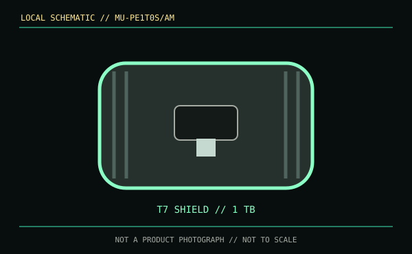

[ REMOVABLE MEDIA // MODEL-SPECIFIC RECORD ]
Samsung Portable SSD T7 Shield 1 TB (MU-PE1T0S/AM)
This is a complete, factory-assembled portable solid-state drive, not a bare M.2 device or an enclosure-only SKU. The record is for the 1 TB black MU-PE1T0S/AM configuration.

IDENTIFICATION: Match the full part number and capacity on the drive label or packaging. Similar T7 and T7 Shield names denote different enclosures and protection ratings.
Format, capacity and compatibility
| Product / part ID | Samsung Portable SSD T7 Shield, 1 TB, MU-PE1T0S/AM (black regional SKU) |
|---|---|
| Interface | USB 3.2 Gen 2, up to 10 Gb/s, via USB Type-C; supplied USB-C and USB-C-to-A cabling permits compatible USB hosts. |
| Performance | Manufacturer-rated maximum sequential transfer: up to 1,050 MB/s read and 1,000 MB/s write. Actual sustained rate depends on host, cable, workload, free space, temperature and cache behavior. |
| NAND / endurance | Samsung does not state a NAND type or TBW endurance rating for this product SKU in the cited consumer specifications; neither is inferred here. |
| Compatibility | Use with USB data-capable computers and supported Android/mobile devices. Peak rate requires a USB 3.2 Gen 2-capable host and cable; USB-C connector shape alone does not guarantee the data mode. Reformatting may be needed for the target OS. |
| Enclosure / SKU caveat | The Shield is the ruggedized, IP65-rated T7 family configuration. A host connection must support data, not merely charging; protective claims do not make it waterproof while connectors are exposed. |
Handling and preservation
Keep the original cable, label and acquisition notes with the drive. Eject cleanly before unplugging, maintain checksummed independent copies, and verify a restore periodically. A portable SSD is not a single-copy archive; NAND retention while unpowered and future controller availability are not guaranteed by a speed or ingress-protection rating.
Sources and standards
- Samsung — T7 Shield 1 TB product specificationsManufacturer specifications and configuration for SKU MU-PE1T0S/AM.
- Samsung Semiconductor — consumer-storage product documents and downloadsSamsung manufacturer documentation and downloads for Portable SSD families.
- USB-IF — USB 3.2 specifications overviewUSB generation naming and interface context.